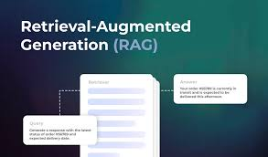
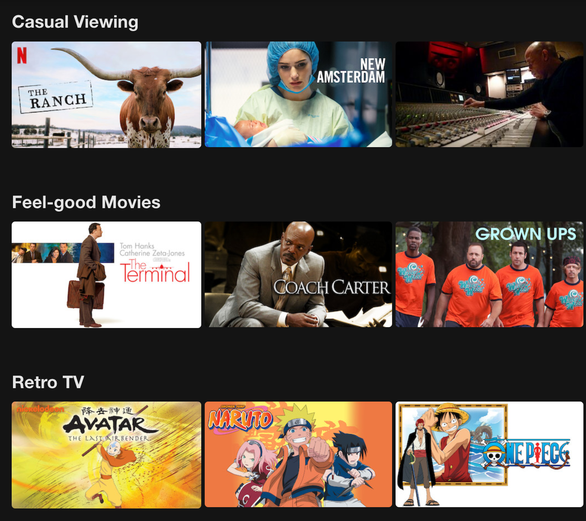
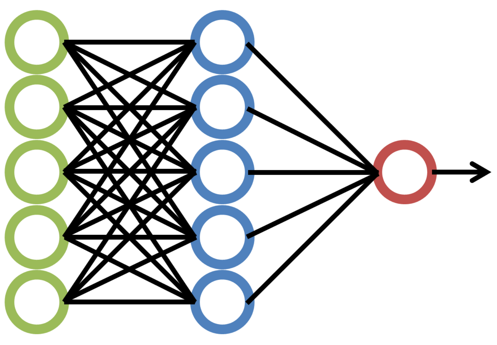
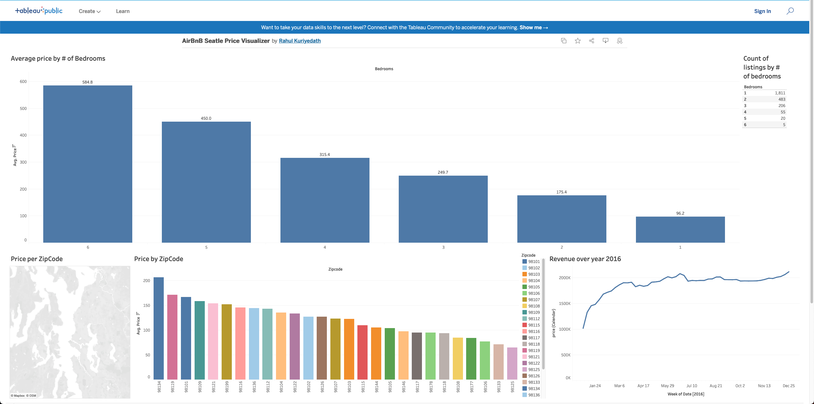

Personal Projects
Generative AI
Realtime Intelligent Web Search using GPT4
- Built a web application that allows a user to ask questions that depend on real time data, for example “What is the latest update regarding the change in OpenAI leadership” or “Who won the most recent F1 race in Las Vegas”.
- The application uses websites on the internet to provide a concise answer with a few important bullet points. It also provides a link to the source websites.
- Tools used: GPT-4 Turbo , BeautifulSoup, Streamlit.
- Github Link: https://github.com/rahulkuriyedath/LLM-Powered-WebSearch

Retrieval Augmented Generation (RAG) based Question Answering system
- QA system with a streamlit UI that uses OpenAI embeddings and generative LLM for closed-domain question answering.
- Allows users to ask natural language questions on their own PDFs, txt files and csvs. Tools used include langchain, FAISS (for vector store and semantic search) and OpenAI LLM.
NLP

Recommendation System (Master of Data Science capstone project)
- Developed a recommender system for a news aggregator tech startup that aggregates news articles for its users based on their usage history and content similarity.
- Implemented document similarity and information retrieval using BERT , Spacy, Pandas and Transformers.
Automated Resume Parser using Transformers
- Trained a transformer model to automatically detect key information from resumes, allowing recruiters to easily filter candidates who are appropriate for the job.
- Used spacy 3.0 to run supervised training and deployed the trained model on AWS. Tools used: python, spacy, AWS, Huggingface.

Movie Recommendation System
- Created a recommender system capable of providing movies recommendation that users may like based on past movie ratings provided by them.
- Implemented both collaborative and content-based filtering techniques.
- Used the MovieLens dataset and the Surprise and TrucatedSVD packages to build the recommendation system.
Computer Vision

FaceRec - Detect & identify faces in video streams
- Tool that recognizes faces in video streams. An application of this code could be in security cameras; the code could identify people as belonging to predefined a "red-list" or "green-list".
- Tools used: Python, OpenCV, face_recognition (python module)
- Used PyTorch to create a CNN that performed OCR and recognize the digits in the image.
Sudoku Solver using OpenCV
- Computer vision project which solves Sudoku puzzles by only providing an image of the sudoku using OCR
- Used Python and OpenCV to read an image of a sudoku (jpeg,png, etc.)
- Used PyTorch to create a CNN that performed OCR and recognize the digits in the image.

Binary image classification using CNN
- Built a binary classification CNN from scratch that can identify "developed" coastlines (containing man-made structures) versus "natural" coastlines (does not contain man-made structures) coastlines.
- Used transfer learning to create a more accurate model using densenet.
- Developed using Python and PyTorch
- Achieved a validation accuracy of 0.94 after 20 epochs
Data Analytics

Airbnb Pricing Trends Visualization
- Data visualization solution using Python and Tableau, enabling comprehensive analysis of Airbnb listing prices in Seattle, facilitating informed decision-making for property investments.
- Provided actionable insights including high-demand areas, optimal property types for maximum ROI, peak occupancy periods, and optimal nightly rates.
- Credits: This project was inspired by Alex Freberg's YouTube tutorials for Tableau.

MoveyMoney (Data visualization project)
- An interactive data visualization project that allows you to visualize budget, revenue, popularity etc. of movies and also allows you to see trends over time.
- Dashboard created using Python and Dash framework.
- Application deployed online using Heroku.

Datascience-eda (Python and R package)
- Developed a package for both Python and R (along with 3 other contributors) that contains functions for easy exploratory data analysis in a data science project.
- Easy to use function for exploring numeric, categorical and text based columns
- Implemented Continuous Integration and Continuous Deployment using GitHub Actions.